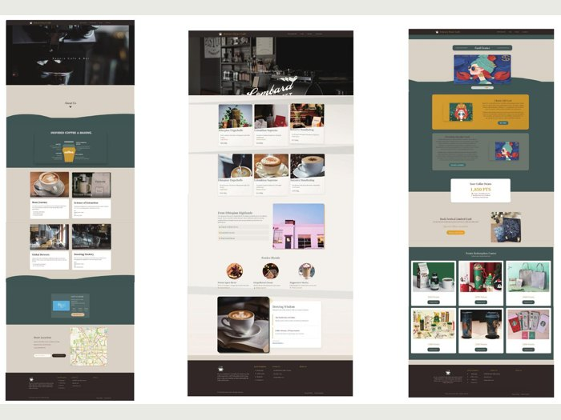
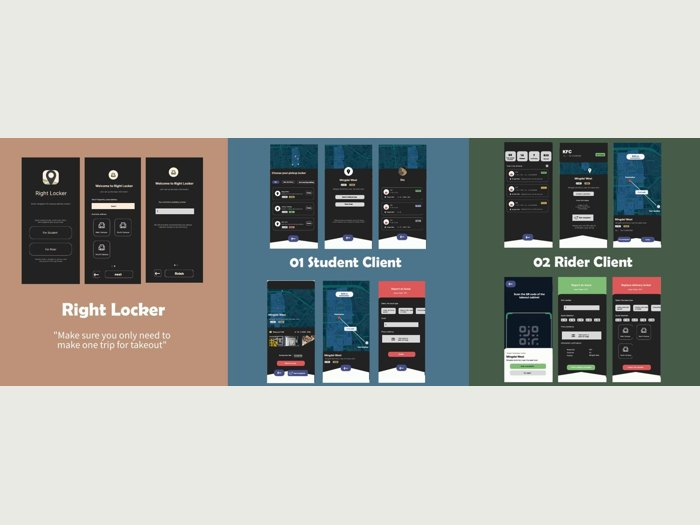

Extract Hour Café咖啡网站设计
WordPress website · Visual direction, page layouts and walkthrough.
Selected websites and digital interfaces. Open a project for larger visuals and its walkthrough. / 网页和界面精选，点击查看大图与演示。

WordPress website · Visual direction, page layouts and walkthrough.

Four mobile screens, review comparison and multimodal review content.

Vue interface · Character generation, editing and community workflows.

Destination, accommodation, review and itinerary pages. HTML/CSS/JavaScript source available.

Student and courier interfaces with a complete video walkthrough.